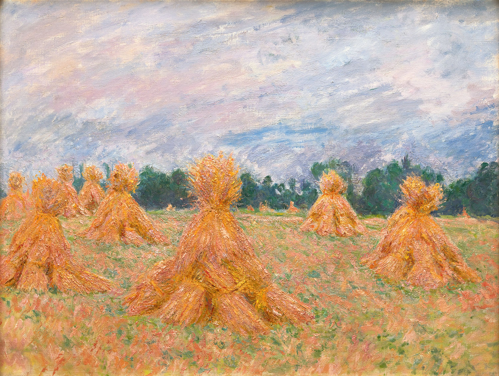
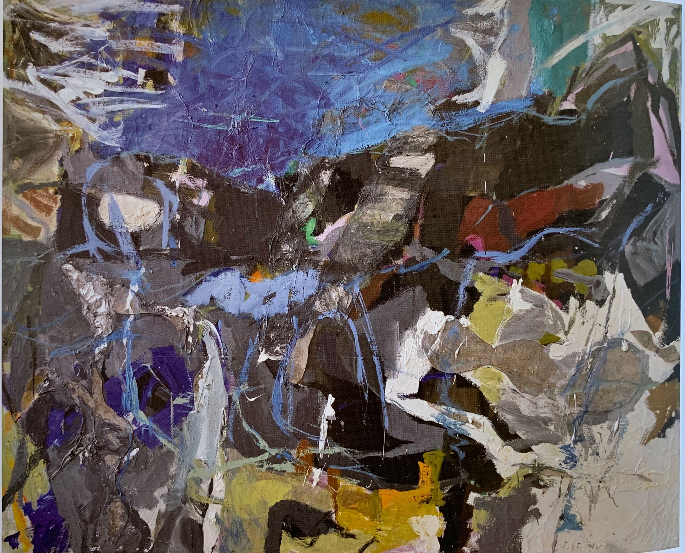
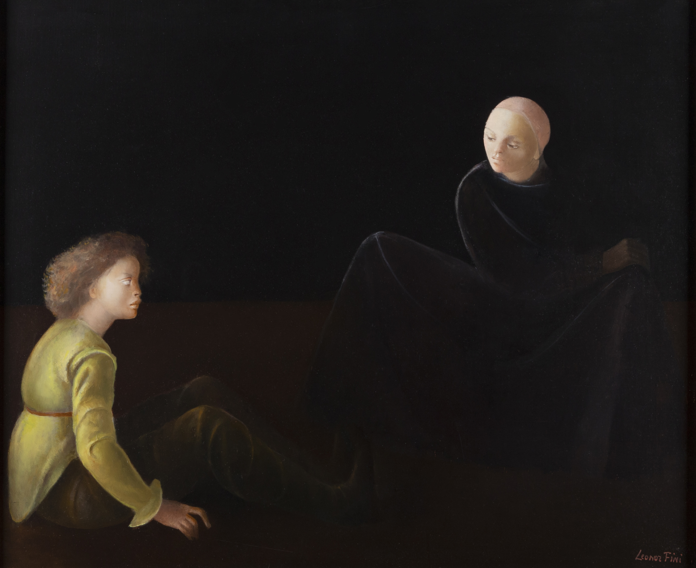
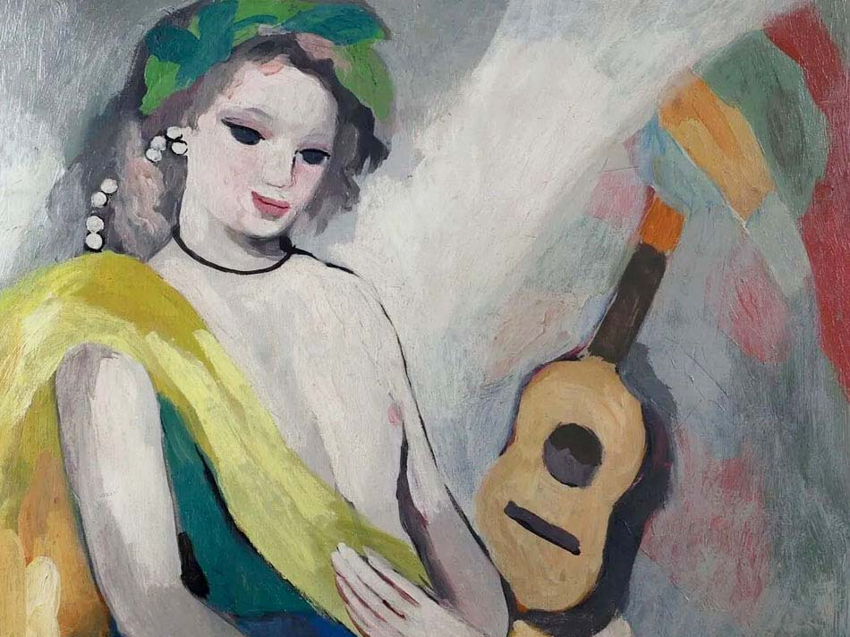
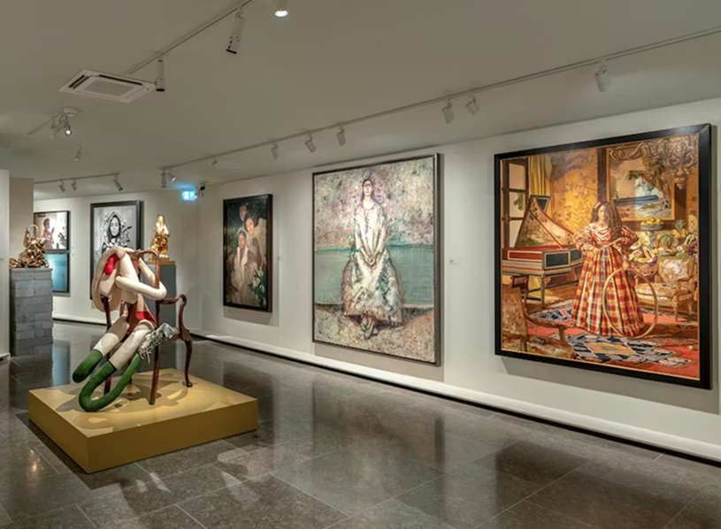
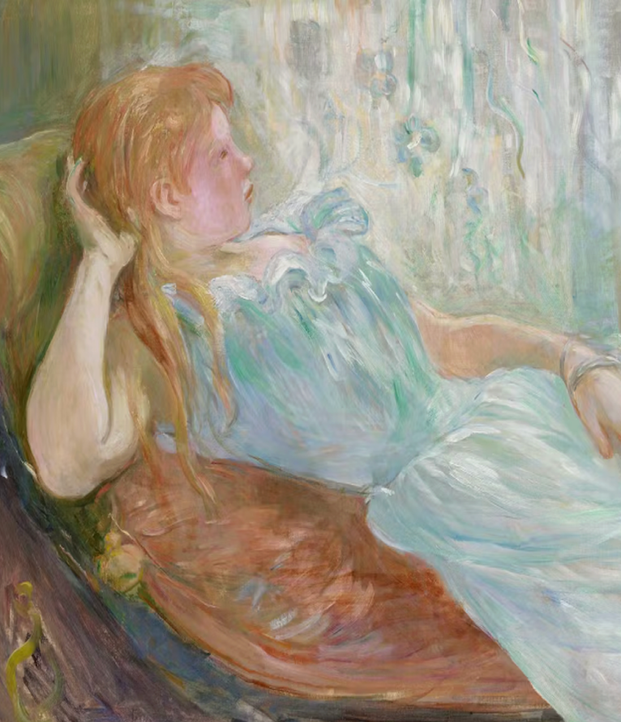

Premier musée privé dédié aux
femmes artistes en Europe
Le Musée de la Famm met à l’honneur les femmes dans l’art et la culture,
en valorisant leur créativité, leur engagement et leur influence à travers
les époques. À travers ses collections et expositions, le musée donne une voix
aux artistes et aux figures féminines souvent oubliées, tout en invitant le
public à porter un regard nouveau sur leur place essentielle dans l’histoire
et la société.
Galerie d’œuvres




Citation fondatrice du musée

“ ALORS QUE JE FINISSAIS DE RELIRE UN GRAND CLASSIQUE DE L’HISTOIRE DE L’ART ET QUE J’EN TOURNAIS LA DERNIÈRE PAGE, JE ME SUIS DEMANDÉ
« MAIS OU SONT LES FEMMES ? » ”
Christian Levett
PRÉPAREZ VOTRE VISITE
ÉVÈNEMENT A VENIR
ANNA-EVA BERGMAN
L’HEURE FAMM accueille Eva Laugier, chargée des publics à la Fondation Hartung-Bergman. De sa jeunesse bohème et engagée à ses révélations esthétiques et picturales, en passant par son destin amoureux hors du commun préservé au sein d’une oliveraie antiboise, cette conférence invite à découvrir la voie romanesque de cette artiste ; guidée par une seule lumière, la sienne.
EXPOSITION DU MOMENT
REMINISCENCE
Première exposition institutionnelle en Europe consacrée à l’artiste Elizabeth Colomba. De la splendeur baroque de Vermeer et Caravage aux visions orientalistes d’Ingres et de Constant, en passant par la grâce rococo de Vigée Le Brun, l’artiste revisite les canons picturaux des maîtres anciens pour réécrire l’histoire avec un narratif inclusif et actuel. Ses toiles foisonnantes de soies, de perles et de symboles renversent ces codes hérités. Le langage du colonialisme devient celui de la dignité, de l’émancipation restituant présence et souveraineté aux femmes noires longtemps effacées du récit artistique.

EXPOSITION FIXE
COLLECTION FAMM
Cette collection du FAMM s'inscrit dans une volonté de donner aux artistes femmes la visibilité que leur talent mérite.En attendant le programme d’expositions temporaires du FAMM, qui débutera après l’été, les visiteurs peuvent découvrir une sélection d’œuvres de la collection permanente, couvrant les principaux courants artistiques, de l’impressionnisme à l’art contemporain. Près de 100 œuvres issues de la Collection Christian Levett sont ainsi exposées, réalisées par près de 90 artistes du monde entier.